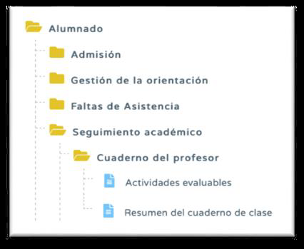

6..1. En relación al uso del cuaderno de clase.
Acerca del uso del Cuaderno se pueden extraer varios documentos. Entrado con perfil Profesorado todos los encontramos en la ruta Documentos que se pueden pedir-Alumnado-Seguimiento académico-Cuaderno del profesor. Ahí nos encontraremos dos posibilidades: Actividades Evaluables y Resumen del Cuaderno de Clase.
